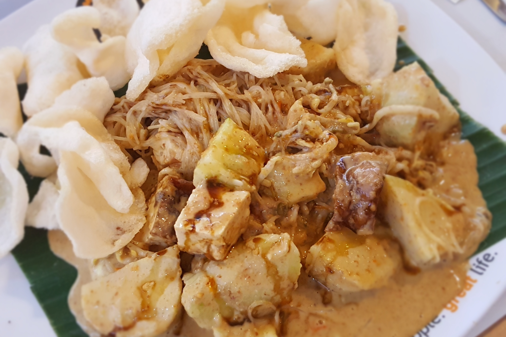
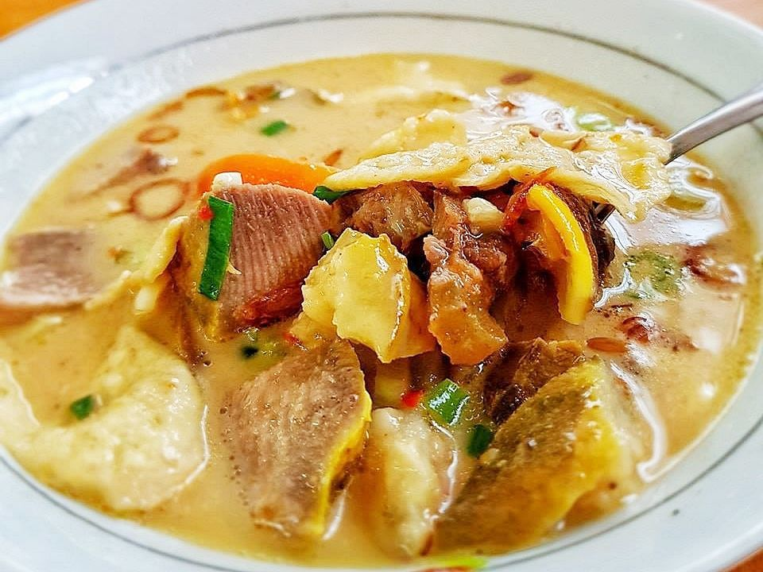
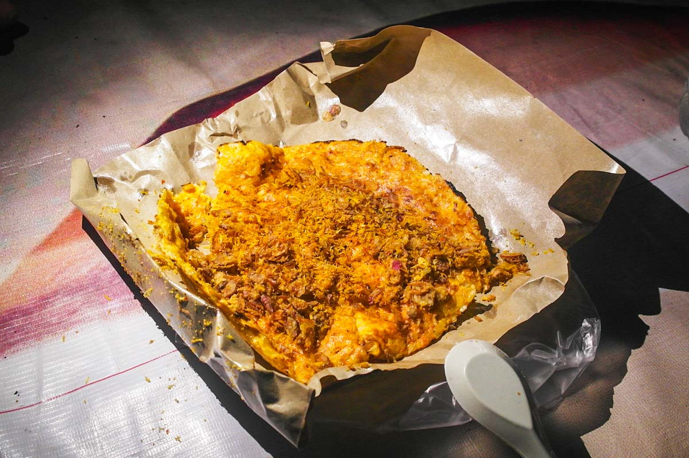

Local Food
Famous local foods that you should try in Jakarta !
1. Ketoprak

Ketoprak is another typical street food in Jakarta but has also spread across Java with its popularity. Ketoprak consists of tofu, lontong, vermicelli and bean sprouts doused in peanut sauce and topped with fried shallots and deep-fried crackers. You may also request for the level of spiciness you desire in each individual Ketoprak in most places. Ketoprak can be found easily all over Jakarta.
2. Soto Betawi

Soto is a favourite Indonesian soup that comes in many versions and presentations. Soto Betawi generally includes beef and offal in its servings, and some variations include mutton and even buffalo meat. Another has rice vermicelli, potatoes and tomatoes. What make soto betawi different is the soup usually contains coconut milk which make the flavor more rich. A serving of soto betawi is usually enjoyed with an accompanying plate of steamed rice, or slices of lontong rice cake. Some sellers sell soto alongside satays of the same meat used. Lime juice and sweet or salted soy sauce is sprinkled over the soup by the customer to taste.
3. Kerak Telor

Kerak Telor is made from glutinious rice fried with duck egg, and topped with shredded coconut, fried shallots and dried shrimp. Duck egg is considered to be more flavorful over chicken eggs, but you can still find ketak telor made with chicken egg. It's a Betawi traditional snack so kerak telor mostly can only be found during the annual Jakarta fair and some popular events. In the past, Kerak Telor was also considered to be food for the wealthy.